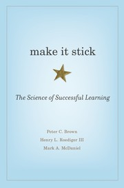

《认知天性》
书·Peter Brown, Henry Roediger, Mark McDaniel, 2014·Make It Stick: The Science of Successful Learning

把提取练习、间隔等研究转成学习方法。
- 作者
- Peter Brown, Henry Roediger, Mark McDaniel
- 年份
- 2014
- 难度
- 入门
- 类型
- 实践
- 所属学派
- 记忆的实验研究
- 核心理论
- 遗忘曲线
版本
- 中文版 《认知天性》 [美] Peter C. Brown / [美] Henry L. Roediger III / [美] Mark A. McDaniel · 邓峰 译 · 中信出版社 · 2018 豆瓣 7.8 分（8056 人评价） 豆瓣页面 ↗
- 英文版 Make It Stick: The Science of Successful Learning Peter C. Brown, Henry L. Roediger III, Mark A. McDaniel · Belknap Press of Harvard University Press · 2014 Open Library ↗